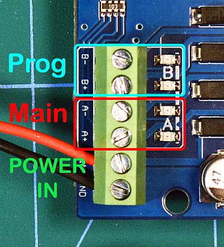

Assembly¶
Let’s start with the basics and add as you see fit. For this install, you’ll need the items listed on the Get Started page, plus:
18 to 16 AWG twisted pair hookup wire to connect your tracks
A 2.5mm x 5.5mm Female DC Plug to Screw Terminal (optional)

Figure 1 - basic setup (click to enlarge picture)
For an Uno, Nano or other microcontroller, please see Using a different microcontroller. If you wish to use a different motor controller (for example to have more current to operate more trains and accessories), see Motor Controllers
For a video on how to do this, click below: Setting Up Your Command Station
1. BEFORE YOU BEGIN, Cut the Vin trace on the motor controller OR Bend out the Vin Pin¶
We recommend you use two separate power supplies (or one power supply that can deliver two different voltages) one for the Arduino Mega and the other for the Motor Controller to power your tracks. You will need to turn the motor controller board upside down and do ONE of the following:
Cut the Vin trace on the bottom of the board.
Bend out or cut off the Vin Pin
Note
By default, the motor controller connects its power supply via the pins, to the Arduino. This can supply too much voltage to the Arduino. If you do not cut this trace or bend out the Vin, you could damage the Arduino if you apply more than 12V to the motor shield. In the same way, if you don’t bypass Vin and use the 2 power supplies as recommended, they would be connected to each other. This would not be good.
Cutting the Trace¶
Cut the trace indicated in the picture with a razor blade or x-acto knife. 2 or 3 firm scratches through the trace should do it. Do not cut too deep. Both a magifier and an ohmmeter would be helpful here. The little vertical line in between the two solder pads is the scratch mark from where we cut through the little solder trace.

Figure 2 - Cutting the Vin trace
If you have an ohmmeter, touch your probes to each side of the trace pads and make sure the resistance reading is infinite. In other words, make sure the trace is cut and there is no longer continuity between the two pads on the trace.
Bending out or Cutting the Vin Pin¶
In this method, you can just bend the Vin pin so that instead of connecting to the header in the Aduino, it rides on the outside of the header. Alternately, you can just snip off the pin with wire cutters and make sure that there is not enough pin left to still make contact with the hole it normally would go into when seated on the Arduino.
Figure 3 - Bending out the Pin
2. You need to connect the motor shield on top of the Arduino.¶
Warning
It is very easy to misalign the pins and then either have trouble diagnosing problems or damage the board!
Here are some tips:
There are power connectors on both boards. They must point in the same direction
There are outdented “tabs” on the opposite end of the board. They must point in the same direction.
The pin numbers on both boards must align (pin 1 goes to pin 1, gnd goes to gnd, etc)
With the power connectors to your right, align the pins facing you first (pins 0-12, aref, gnd, etc.)
Look at the pins on the motorboard and make sure they are all straight and line up in a neat row
Place both boards on the table with the power connector end facing in the same direction.
Note that you can click on most of the images to enlarge them.

Figure 3 - Properly orient the boards
Did you remember to cut the trace on the motor shield? If not, see above. Otherwise, sight down both rows of pins on the motor board and make sure they are all straight. They should all line up in a row and not be bent in any plane, just like the teeth on a comb. If any look like the photo below, bend them with your fingers and/or needle nose pliers.

Figure 4 - Bent pins
Line up the pins on the side of the board closest to the USB with the header connector on the Mega first. You want to line up pins 0-7 on the Mega with the same pins on the motor board. On the other side, IOREF, RESET, 3V3, etc. and A0-A5 need to line up on both boards. See the picture below and notice the small gap between the two sets of pins to match the two pin header sockets.
{kind=link}
Figure 5 - Line up left side first
Just align them and start to push them in but don’t push them all the way. Use your fingers to try to push the pins to get them to all to into the holes.

Figure 6 - Get all the pins started
Do the same on the other side. Get all the pins aligned and start to press gently to get them into the holes. Notice on this side, you have more holes than you do pins. This is normal.

Figure 7 - Start the other side
Now, being careful to not bend any pins gently press, using a rocking motion if you need to, in order to get the motor board to seat firmly onto the Mega. Press gently until you feel you can’t put the pins in any further. Don’t force anything.

Figure 8 - Gently press the boards together
The boards should be seated. Note the pins are longer than the headers. It is normal for you to see a few millimeters of the pins between the bottom of the motor board and the top of the headers. Figure 9 shows the boards as they look properly seated.
{kind=link}
Figure 9 - The boards when fully seated
Check your work. Look under and through where the boards connect, make sure no pins missed the holes and got bent so that they run along the outside of the headers.
Note
You may notice that the soldered pins on the underside of the power connector hit the top of the USB connector on the Arduino. You can either lift the board slightly, it will still connect properly, or take diagonal cutters and carefully trim the ends of the pins a bit.
3. Connect your power supply to the motor shield (But don’t plug it in yet!)¶
Warning
Make sure you have cut the trace on the motor control board. If not, see above first. Once you know the trace is cut, connect power to the motor board
Make sure you have a power supply with the correct voltage and current rating. For help on selecting your power supply, please see compatible Power Supplies
If you are using a “bench” or metal box type power supply, simply connect the DC output of the power supply to the DC input of the motor shield. Make sure that the positive screw terminal (+) is connected to the positive terminal (Vin) of the motor shield and the negative terminal (- or gnd) is connected to the negative (gnd) terminal of the motor shield
{kind=link}
Figure 10 - Power in to the Motor Shield
If you are using a laptop style “brick” power supply or an adapter that plugs into the wall (aka wall wart), use the barrel connector to screw terminal adapter to connect your power supply to the Vin and ground pins on the motor shield. Be careful to use the correct polarity. Make sure the positive terminal on the screw terminal adapter connects to the positive (+) on the motor shield and the negative terminal (- or gnd) connects to the negative terminal.

Figure 11 - Screw Terminal Adapter to Motor Shield
If you don’t have a screw terminal adapter, you can cut the end off your power supply and strip the wires. The outer wire braid is usually the negative connection and the center wire is the positive connection. Check the wiring image on the power supply itself.
4. Connect the power wires to the tracks¶
There are two sets of output connectors on the motor shield, “A” and “B”. A is the main or operations (also called “Ops”) track while B is the programming or service track. Connect twisted pair wire of the proper gauge to each track. Polarity it non important here, but if you will be using a siding track instead of a separate, unused piece of track, make sure that the positive and negative for both tracks match. In other words, if you view one side of your main track as having a “left” side and a “right” side, and connect positive output A to the left side, connect the positive from the B side to the left side of the programming track. In electrical terms, we want both tracks to be “in phase” with each other. Here is the diagram from above repeated again for reference.
Figure 12 - Out to Main and Program tracks
5. Connect the power supply to the Arduino (but don’t plug it in yet!)¶
Connect the 2.5mm barrel connector from your separate 7-9V DC powersupply to the barrel connector on the Arduino. If you have a power supply with bare wires, you can bypass the barrel connector and connect your power supply to the “Vin” and “Gnd” pins on the Arduino.
Note
There are different ways to power your Arduino. You may be able to avoid having a second power supply if you will always have a computer connected to your CS (for example to run exWebThrottle or JMRI. There is also a way to use a 5V power supply. Please read Power Supplies to help you find what will work best for you).
6. Install the optional WiFi board¶
You can connect a controller like JMRI or our exWebThrottle by using the serial cable to connect between your computer and the CS. If so, skip to step 7. If you are installing a ESP8266 Shield or bare ESP8266 to connect wirelessly, Click the link below.
7. Load firmware on your Command Station¶
Keep your USB cable handy because we are going to need it in this step.
Go to the Command Station downloads page. Most users will want to use the installer.
TECHNICAL NOTES¶
Wire Gauge - The Arduino Motor controller can only provide about 1.5 Amps of power (despite being rated for 2), so 18 AWG wire is ample. If you use a different motor controller and deliver more current to your track, you may need thicker wire (lower number gauge).
Power Supplies - Why do we recommend a 7-9V power supply for the Mega when the manual says it can handle 12V or even 20? Can’t you just use one 12V power supply to power both of them? Short answer; NO. You want two supplies (or one supply that splits out 2 voltages). The Arduino Mega only needs around 7V to operate. Any voltage over that is wasted as heat and can burn out the regulator on the board. And most people want a minimum of 12V into the Motor Board, while many want 14 (for N and HO Scale). Where your Mega could run hot for a while with 12V, if 14V from the Motorboard was connected to the Mega, it would destroy it. Cut the trace and use 2 power supplies.
Using a 5V Supply - There is one more option for powering the Mega. If you have a 5V DC regulated power supply, you can bypass the barrel connector and the regulator and connect it direcly to the 5V and Gnd pins on the Arduino. Do NOT connect anything to the barrel connector if you do this! You would still need to cut the Vin trace on the Motor Shield and use your separate power supply that plugs into the shield.